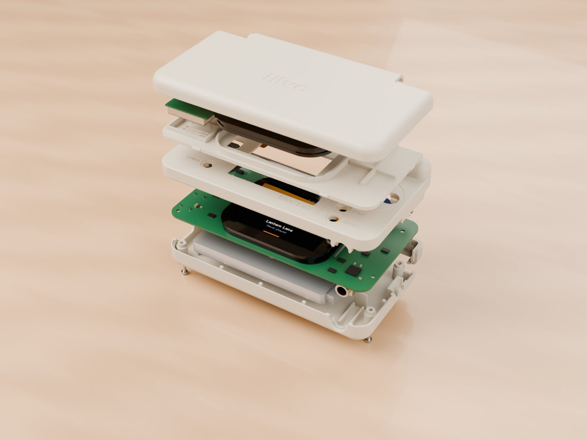
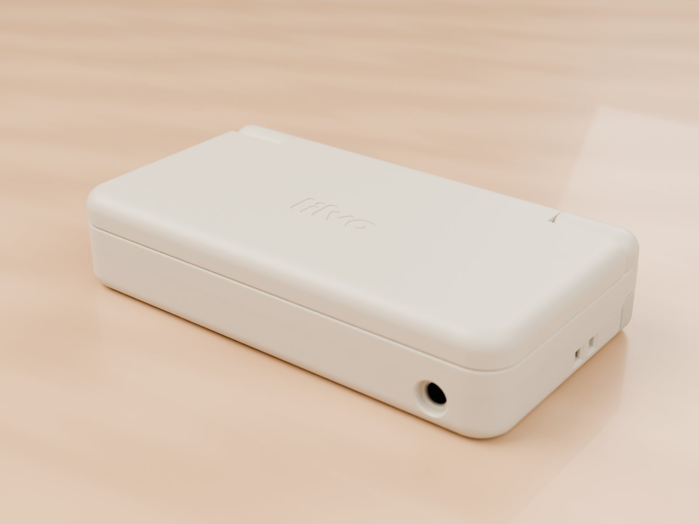

The enclosure, layer by layer
Fitting two screens, a battery and a board into 85 × 46 × 18 mm means every tenth of a millimetre is spoken for. Here's how the enclosure is built, from the bottom up.

The parts
| Part | What it does |
|---|---|
| A · lid top | The outside of the lid, with the engraved logo. Holds the adapter board. |
| B · lid inner | Holds the top screen and the speaker. Snaps into A with six bumps and two clips; no screws. |
| C · base top | The button face. Holds the bottom screen, guides every key, and carries the hinge seats. |
| D · base bottom | Battery bay, screw posts, port supports and the shoulder-button pivots. |
| E · hinge cap | Covers the end of the hinge pin and the coiled cable. |
Four M1.4 screws from the bottom hold the base together, plus one small screw for the hinge cap.
18 mm, from the bottom
| Height | Layer |
|---|---|
| 0 – 1.0 mm | Bottom shell |
| 1.0 – 6.0 | Battery, 59 × 37 × 5 mm, 1200 mAh |
| 6.0 – 7.9 | 0.3 mm gap, then the parts on the underside of the board |
| 7.9 – 8.7 | Main board |
| 8.7 – 12.3 | Bottom screen, switches and keys |
| 12.3 – 13.1 | Gap between base and lid when closed |
| 13.1 – 18.0 | Lid: inner plate, top screen, adapter, top shell |

The hinge
- A 1.5 mm stainless steel pin runs the full width, through both ears and the lid's barrel.
- The cable to the top screen is wound 2¼ turns around that pin inside the left ear. Opening the lid just loosens the coil, so the cable never folds sharply.
- In the right ear, a small plastic cam and a spring give a click at "closed" and at "fully open", and hold the lid where you leave it. It opens to 170°.
Keys
The D-pad and the four face buttons sit 0.6 mm above the shell; Start, Select and Power sit slightly below it so they don't get pressed by accident. The four face buttons are joined at the centre so they can be made as one part, or cut apart for mixed colours. L and R are small levers that pivot on posts in the bottom shell and press switches mounted on the edge of the board.
Checked before printing
Every version goes through scripts before anything is made: 158 pairs of nearby parts checked for collisions (0 problems), a lid sweep from 0 to 170° (no collisions), and a check that no part has an opening where it shouldn't. The current version is also being machined in ABS as hand samples, which is the real test of how it feels.
